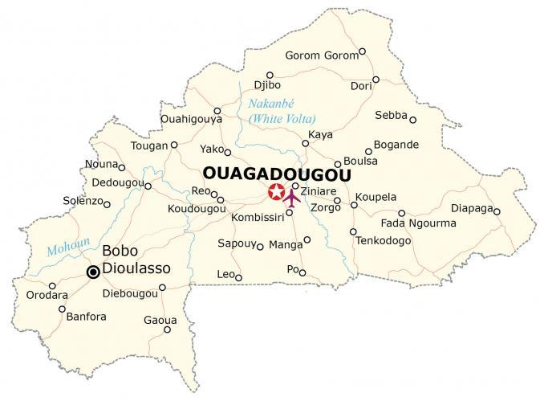

Burkina Faso is a landlocked country located in Western Africa. It borders Mali to the northwest, Niger to the northeast, as well as Benin, Togo, Ghana, and the Ivory Coast to the south. Approximately 21.4 million people live in Burkina Faso.
Ouagadougou is the capital and largest city with about 2.5 million who live there. Burkina Faso was previously known as the Republic of Upper Volta until 1984 when the country changed its name to its current one.
Go back home